Gene set testing for Illumina HumanMethylation Arrays
Evaluating the performance of different methods
Jovana Maksimovic, Alicia Oshlack and Belinda Phipson
July 21, 2020
Last updated: 2020-07-21
Checks: 7 0
Knit directory: methyl-geneset-testing/
This reproducible R Markdown analysis was created with workflowr (version 1.6.2). The Checks tab describes the reproducibility checks that were applied when the results were created. The Past versions tab lists the development history.
Great! Since the R Markdown file has been committed to the Git repository, you know the exact version of the code that produced these results.
Great job! The global environment was empty. Objects defined in the global environment can affect the analysis in your R Markdown file in unknown ways. For reproduciblity it's best to always run the code in an empty environment.
The command set.seed(20200302) was run prior to running the code in the R Markdown file. Setting a seed ensures that any results that rely on randomness, e.g. subsampling or permutations, are reproducible.
Great job! Recording the operating system, R version, and package versions is critical for reproducibility.
Nice! There were no cached chunks for this analysis, so you can be confident that you successfully produced the results during this run.
Great job! Using relative paths to the files within your workflowr project makes it easier to run your code on other machines.
Great! You are using Git for version control. Tracking code development and connecting the code version to the results is critical for reproducibility.
The results in this page were generated with repository version 7fd8e1c. See the Past versions tab to see a history of the changes made to the R Markdown and HTML files.
Note that you need to be careful to ensure that all relevant files for the analysis have been committed to Git prior to generating the results (you can use wflow_publish or wflow_git_commit). workflowr only checks the R Markdown file, but you know if there are other scripts or data files that it depends on. Below is the status of the Git repository when the results were generated:
Ignored files:
Ignored: .DS_Store
Ignored: .Rhistory
Ignored: .Rproj.user/
Ignored: analysis/figures.nb.html
Ignored: code/.job/
Ignored: code/old/
Ignored: data/
Ignored: output/.DS_Store
Ignored: output/450K.rds
Ignored: output/CD4vCD8.GO.csv
Ignored: output/CD4vCD8.KEGG.csv
Ignored: output/EPIC.rds
Ignored: output/FDR-analysis/
Ignored: output/compare-methods/
Ignored: output/figures/
Ignored: output/random-cpg-sims/
Unstaged changes:
Modified: .gitignore
Note that any generated files, e.g. HTML, png, CSS, etc., are not included in this status report because it is ok for generated content to have uncommitted changes.
These are the previous versions of the repository in which changes were made to the R Markdown (analysis/exploreData.Rmd) and HTML (docs/exploreData.html) files. If you've configured a remote Git repository (see ?wflow_git_remote), click on the hyperlinks in the table below to view the files as they were in that past version.
| File | Version | Author | Date | Message |
|---|---|---|---|---|
| html | 976b2b5 | JovMaksimovic | 2020-07-17 | Build site. |
| Rmd | 2be6153 | JovMaksimovic | 2020-07-14 | Updated code for generating manuscript figures. |
| Rmd | cfcac1b | Jovana Maksimovic | 2020-07-09 | Updated paper figures. |
| html | b8b0c0b | Jovana Maksimovic | 2020-06-23 | Build site. |
| Rmd | e74e6e4 | Jovana Maksimovic | 2020-06-23 | wflow_publish(c("analysis/exploreData.Rmd")) |
| Rmd | 823b793 | Jovana Maksimovic | 2020-06-16 | UPdated analyses with label translation and new colour palette. |
| html | 9cb4fea | Jovana Maksimovic | 2020-05-22 | Build site. |
| Rmd | 95e0882 | Jovana Maksimovic | 2020-05-22 | wflow_publish(c("analysis/runTimeComparison.Rmd", "analysis/exploreData.Rmd", |
| html | 22f00e9 | Jovana Maksimovic | 2020-05-19 | Build site. |
| Rmd | 63b0011 | Jovana Maksimovic | 2020-05-19 | wflow_publish(c("analysis/exploreArrayBias450.Rmd", "analysis/exploreArrayBiasEPIC.Rmd", |
| html | afc650b | JovMaksimovic | 2020-05-11 | Build site. |
| Rmd | 25e58bc | JovMaksimovic | 2020-05-11 | Added BH to pdjust calls, added methylation vs expression plot. |
| Rmd | cb5e0b1 | JovMaksimovic | 2020-05-08 | Added delta M vs. log FC plot for methylation vs. RNAseq data for each contrast. |
| html | da4f010 | JovMaksimovic | 2020-05-08 | Build site. |
| Rmd | c70ec78 | JovMaksimovic | 2020-05-08 | wflow_publish(c("analysis/expressionGenesets.Rmd", "analysis/exploreData.Rmd")) |
| html | 23cb749 | JovMaksimovic | 2020-04-28 | Build site. |
| Rmd | 81c97a7 | JovMaksimovic | 2020-04-28 | wflow_publish(c("analysis/expressionGenesets.Rmd", "analysis/exploreData.Rmd")) |
| html | d930b45 | JovMaksimovic | 2020-04-27 | Build site. |
| Rmd | bd39053 | JovMaksimovic | 2020-04-27 | wflow_publish(c("analysis/exploreData.Rmd", "analysis/regionAnalysis.Rmd")) |
| html | 06648a4 | JovMaksimovic | 2020-04-27 | Build site. |
| Rmd | 89af323 | JovMaksimovic | 2020-04-27 | wflow_publish(c("analysis/index.Rmd", "analysis/exploreData.Rmd", |
| html | 8dc1e0f | Jovana Maksimovic | 2020-04-24 | Build site. |
| Rmd | f98b245 | Jovana Maksimovic | 2020-04-24 | wflow_publish("analysis/exploreData.Rmd") |
| html | caa373d | Jovana Maksimovic | 2020-04-24 | Build site. |
| Rmd | 9373b7c | Jovana Maksimovic | 2020-04-24 | wflow_publish("analysis/exploreData.Rmd") |
| Rmd | 3ae5062 | Jovana Maksimovic | 2020-04-21 | Updated code to reverse bubble plot y-axis |
| html | e82bc51 | Jovana Maksimovic | 2020-04-03 | Build site. |
| Rmd | f7696d6 | Jovana Maksimovic | 2020-04-03 | wflow_publish("analysis/exploreData.Rmd") |
| html | 76dacfc | Jovana Maksimovic | 2020-03-31 | Build site. |
| Rmd | 43ca6b6 | Jovana Maksimovic | 2020-03-31 | wflow_publish("analysis/exploreData.Rmd") |
| Rmd | 2bcb4c9 | JovMaksimovic | 2020-03-23 | New script and modifications for methylGSA analysis. |
| Rmd | 250d8ae | JovMaksimovic | 2020-03-16 | Comitting local changes. |
| Rmd | 24fb166 | Jovana Maksimovic | 2020-03-16 | Adding Rmd file changes. |
| Rmd | d7cd66e | Jovana Maksimovic | 2020-03-02 | Initial Commit |
library(here)
library(minfi)
library(paletteer)
library(limma)
library(BiocParallel)
library(reshape2)
library(gridExtra)
library(missMethyl)
library(ggplot2)
library(glue)
library(grid)
library(tidyverse)
library(rbin)
library(patchwork)
library(ChAMPdata)
library(lemon)
source(here("code/utility.R"))Load data
We are using publicly available EPIC data GSE110554 generated from flow sorted blood cells. The data is normalised and filtered (bad probes, multi-mapping probes, SNP probes, sex chromosomes).
# load data
dataFile <- here("data/GSE110554-data.RData")
if(file.exists(dataFile)){
# load processed data and sample information
load(dataFile)
} else {
# get data from experiment hub, normalise, filter and save objects
readData(dataFile)
# load processed data and sample information
load(dataFile)
}QC plots
# plot mean detection p-values across all samples
dat <- tibble::tibble(mean = colMeans(detP), cellType = targets$CellType)
ggplot(dat, aes(y = mean, x = cellType, fill = cellType)) +
geom_bar(stat = "identity") +
labs(fill = "Cell Type") +
scale_fill_brewer(palette = "Dark2")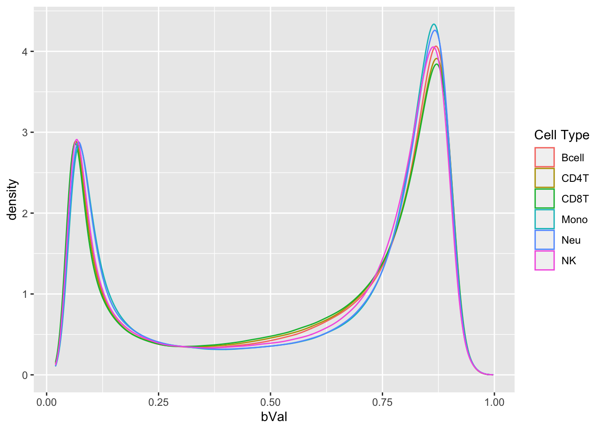
# plot normalised beta value distribution
bVals <- getBeta(normGr)
dat <- data.frame(reshape2::melt(bVals))
colnames(dat) <- c("cpg", "sample", "bVal")
dat <- dplyr::bind_cols(dat, cellType = rep(targets$CellType,
each = nrow(bVals)))
ggplot(dat, aes(x = bVal, colour = cellType)) +
geom_density() +
labs(colour = "Cell Type") +
scale_color_brewer(palette = "Dark2")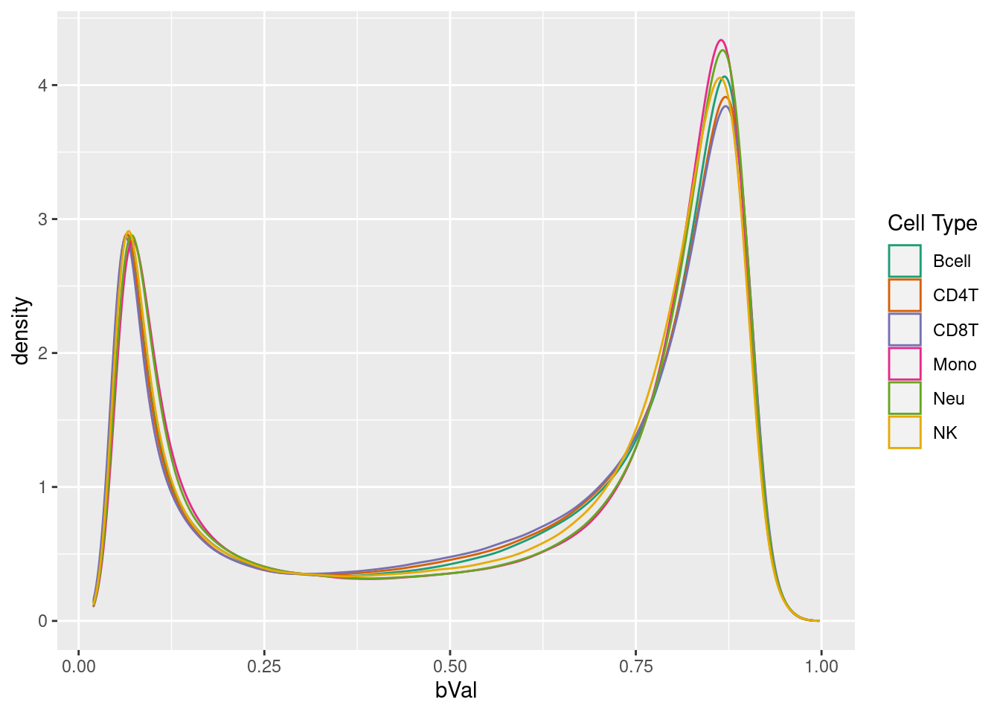
# MDS plots to look at largest sources of variation
p <- plotMDS(getM(fltGr), top=1000, gene.selection="common", plot = FALSE)
dat <- tibble::tibble(x = p$x, y = p$y, cellType = targets$CellType)
p <- ggplot(dat, aes(x = x, y = y, colour = cellType)) +
geom_point(size = 2) +
labs(colour = "Cell type") +
scale_colour_brewer(palette = "Dark2") +
labs(x = "Principal component 1", y = "Principal component 2")
p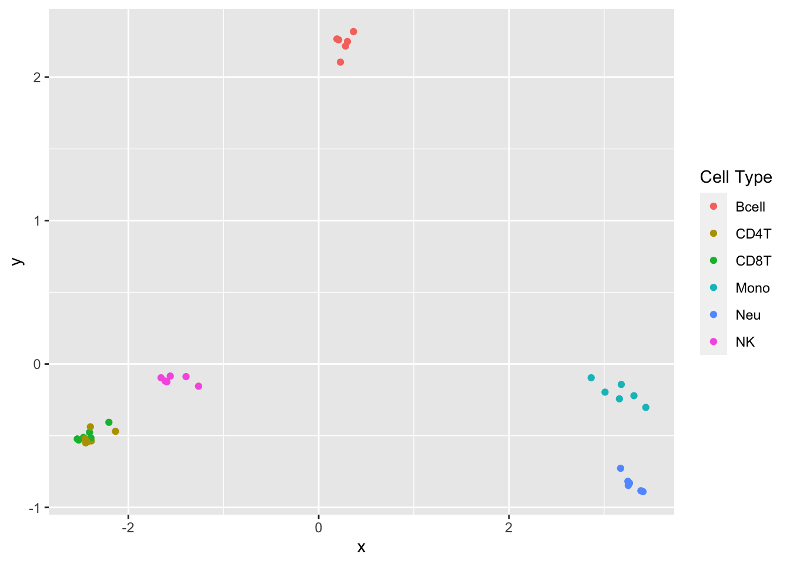
fig <- here("output/figures/Fig-4A.rds")
saveRDS(p, fig, compress = FALSE)Statistical analysis
Compare several sets of sorted immune cells. Consider results significant at FDR < 0.05 and delta beta ~ 10% (~ lfc = 0.5).
mVals <- getM(fltGr)
bVals <- getBeta(fltGr)design <- model.matrix(~0+targets$CellType)
colnames(design) <- levels(factor(targets$CellType))
fit <- lmFit(mVals, design)
cont.matrix <- makeContrasts(CD4vCD8=CD4T-CD8T,
#BcellvMono=Bcell-Mono,
MonovNeu=Mono-Neu,
BcellvNK=Bcell-NK,
#NeuvNK=Neu-NK,
#MonovNK=Mono-NK,
levels=design)
fit2 <- contrasts.fit(fit, cont.matrix)
tfit <- eBayes(fit2, robust=TRUE, trend=TRUE)
tfit <- treat(tfit, lfc = 0.5)
pval <- 0.05
fitSum <- summary(decideTests(tfit, p.value = pval))
fitSum CD4vCD8 MonovNeu BcellvNK
Down 5072 9324 34803
NotSig 725611 712480 667559
Up 3202 12081 31523bDat <- getBiasDat(rownames(topTreat(tfit, coef = "BcellvNK", num = 5000)),
array.type = "EPIC")Loading required package: IlluminaHumanMethylationEPICanno.ilm10b4.hg19p <- ggplot(bDat, aes(x = avgbias, y = propDM)) +
geom_point(shape = 1, size = 2) +
geom_smooth() +
labs(x = "No. CpGs per gene (binned)",
y = "Prop. differential methylation") +
theme_minimal() +
theme(panel.grid = element_blank(),
axis.line = element_line(colour = "black"))
p`geom_smooth()` using method = 'loess' and formula 'y ~ x'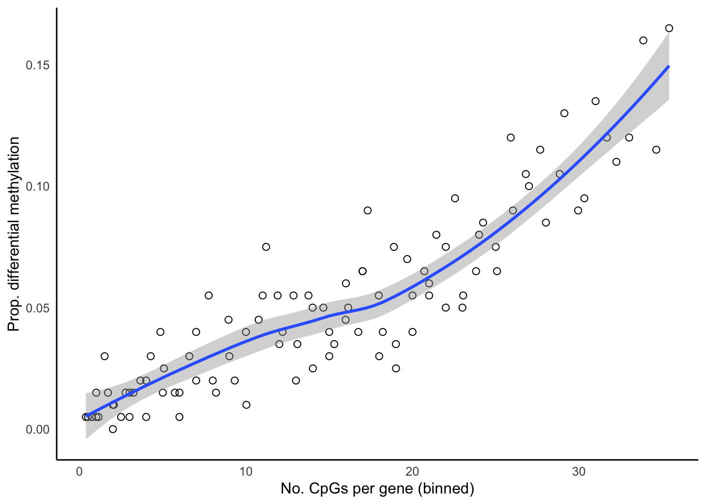
fig <- here("output/figures/Fig-1B.rds")
saveRDS(p, fig, compress = FALSE)How correlated is differential methylation with differential expression for the same contrasts (same cell types but not identical samples)?
ann <- loadAnnotation("EPIC")
flatAnn <- loadFlatAnnotation(ann)
rfit <- readRDS(here("data/rnaseq-fit.rds"))
rdat <- rownames_to_column(data.frame(rfit$coefficients), var = "gene_id")
rdat %>% inner_join(data.frame(rfit$genes)) %>%
mutate(entrezid = as.character(entrezid)) %>%
dplyr::select(-length) -> rdat
rdat <- reshape2::melt(rdat, value.name = "coefficient")
reshape2::melt(rfit$p.value, value.name = "p.value") %>%
group_by(Contrasts) %>%
mutate(FDR = p.adjust(p.value, method = "BH")) -> rfdr
rdat %>% inner_join(rfdr,
by = c("gene_id" = "Var1", "variable" = "Contrasts")) -> rdat
mdat <- rownames_to_column(data.frame(tfit$coefficients), var = "cpg")
mdat %>% inner_join(flatAnn) %>%
dplyr::select(-symbol, -alias) -> mdat
mdat <- reshape2::melt(mdat, value.name = "coefficient") -> mdat
mdat %>% dplyr::select(-cpg) %>%
mutate(promoter = ifelse(group %in% c("TSS1500", "TSS200", "1stExon"),
"prom", "other")) %>%
group_by(variable, entrezid, promoter) %>%
#summarise(coef = coefficient[which.max(abs(coefficient))]) -> mdat
summarise(coef = median(coefficient)) %>%
dplyr::filter(promoter == "prom") -> mdat
mdat %>% inner_join(rdat, by = c("entrezid", "variable")) %>%
mutate(colour = ifelse(FDR < 0.05, "Sig.", "Not sig.")) -> dat
ggplot(dat, aes(x = coef, y = coefficient, colour = colour)) +
geom_point(data = dat[dat$colour == 'Not sig.',], alpha = 0.25,
size = 1) +
geom_point(data = dat[dat$colour == 'Sig.',], size = 0.75, alpha = 0.5) +
facet_wrap(vars(variable), ncol = 2, scales = "free") +
labs(x = "Median logFC for CpGs in gene promoter",
y = "Gene expression Log FC", color = "Diff. Gene Exp.")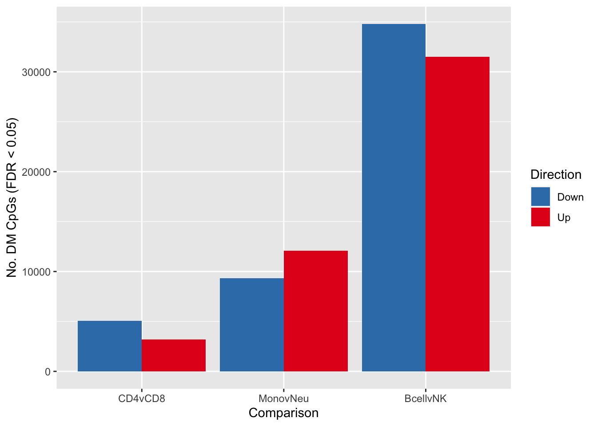
Examine only the independent contrasts.
dat <- melt(fitSum[rownames(fitSum) != "NotSig", ])
colnames(dat) <- c("dir","comp","num")
p <- ggplot(dat, aes(x = comp, y = num, fill = dir)) +
geom_bar(stat = "identity", position = "dodge") +
labs(x = "Comparison", y = "No. DM CpGs (FDR < 0.05)", fill = "Direction") +
scale_fill_brewer(palette = "Set1", direction = -1)
p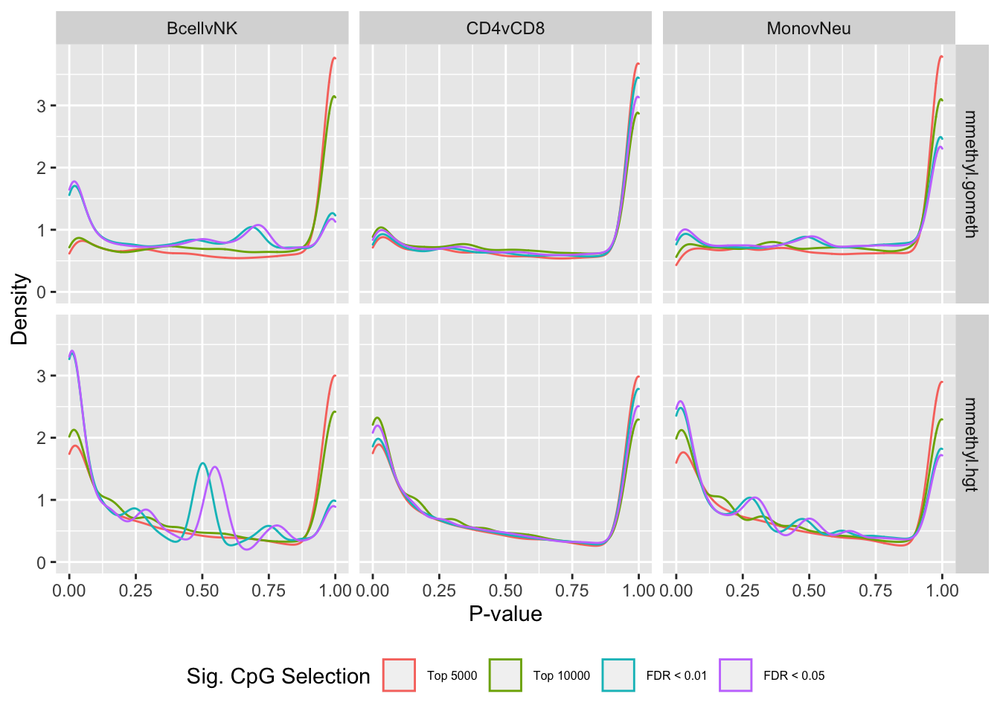
fig <- here("output/figures/Fig-4B.rds")
saveRDS(p, fig, compress = FALSE)Compare performance of different gene set testing methods
Compare the gene set testing methods available for methylation arrays; hypergeometric test (HGT), gometh (best), methylRRA (GLM), methylRRA (ORA) and methylRRA (GSEA). As methylRRA does not work well with sets that only contain very few genes or very large sets, we will only test sets with at least 5 genes and maximum of 5000 genes.
Save analysis results
minsize <- 5
maxsize <- 5000
outFile <- here("data/blood.contrasts.rds")
if(!file.exists(outFile)){
obj <- NULL
obj$tfit <- tfit
obj$maxsize <- maxsize
obj$minsize <- minsize
obj$mVals <- mVals
obj$targets <- targets
saveRDS(obj, file = outFile)
} Load output for all methods
inFiles <- list.files(here("output/compare-methods"), pattern = "rds",
full.names = TRUE)
res <- lapply(inFiles, function(file){
readRDS(file)
})
dat <- as_tibble(dplyr::bind_rows(res))dat %>% filter(grepl("mmethyl", method)) %>%
mutate(method = unname(dict[method])) -> subDat
ggplot(subDat, aes(x = pvalue, colour = sub)) +
geom_density() +
facet_grid(cols = vars(contrast), rows = vars(method)) +
labs(colour = "Sig. CpG Selection", x = "P-value", y = "Density") +
scale_color_hue(labels = c("Top 5000", "Top 10000", "FDR < 0.01",
"FDR < 0.05")) +
theme(legend.position = "bottom", legend.text = element_text(size=6))
Test GO categories
cpgEgGo <- cpgsEgGoFreqs(flatAnn)
cpgEgGo %>%
group_by(GO) %>%
summarise(med = median(Freq)) -> medCpgEgGo`summarise()` ungrouping output (override with `.groups` argument)In order to examine whether the probe-number bias influenced the significantly enriched GO categories for the five different methods, we split the GO categories into bins based on the median number of CpGs per gene per GO category. We then calculated the proportion of significantly enriched GO categories in each bin for each of the three comparisons. As GOmeth explicitly corrects for this bias it showed very little trend. However mRRA (ORA) tended to have more significant GO categories when the genes had larger numbers of CpGs. The hypergeometric test and mRRA (GSEA) tended to have more significant GO categories with average numbers of CpGs associated per gene ranging from 27 - 44. The mGLM method appears to control for the probe-number bias of the array fairly well.
dat %>% filter(set == "GO") %>%
filter(sub %in% c("n","c1")) %>%
mutate(method = unname(dict[method])) %>%
inner_join(medCpgEgGo, by = c("ID" = "GO")) -> sub
bins <- rbin_quantiles(sub, ID, med, bins = 12)
sub$bin <- as.factor(findInterval(sub$med, bins$upper_cut))
binLabs <- paste0("<", bins$upper_cut)
names(binLabs) <- levels(sub$bin)
binLabs[length(binLabs)] <- gsub("<", "\u2265", binLabs[length(binLabs) - 1])
sub %>% group_by(contrast, method, bin) %>%
summarise(prop = sum(pvalue < 0.05)/n()) -> pdat`summarise()` regrouping output by 'contrast', 'method' (override with `.groups` argument)p <- ggplot(pdat, aes(x = as.numeric(bin), y = prop, color = method)) +
geom_line() +
facet_wrap(vars(contrast), ncol = 3) +
scale_x_continuous(breaks = as.numeric(levels(pdat$bin)), labels = binLabs) +
theme(axis.text.x = element_text(angle=45, hjust = 1, vjust = 1,
size = 7),
legend.position = "bottom") +
labs(x = "Med. No. CpGs per Gene per GO Cat. (binned)",
y = "Prop. GO Cat. with p-value < 0.05",
colour = "Method") +
scale_color_manual(values = methodCols)
p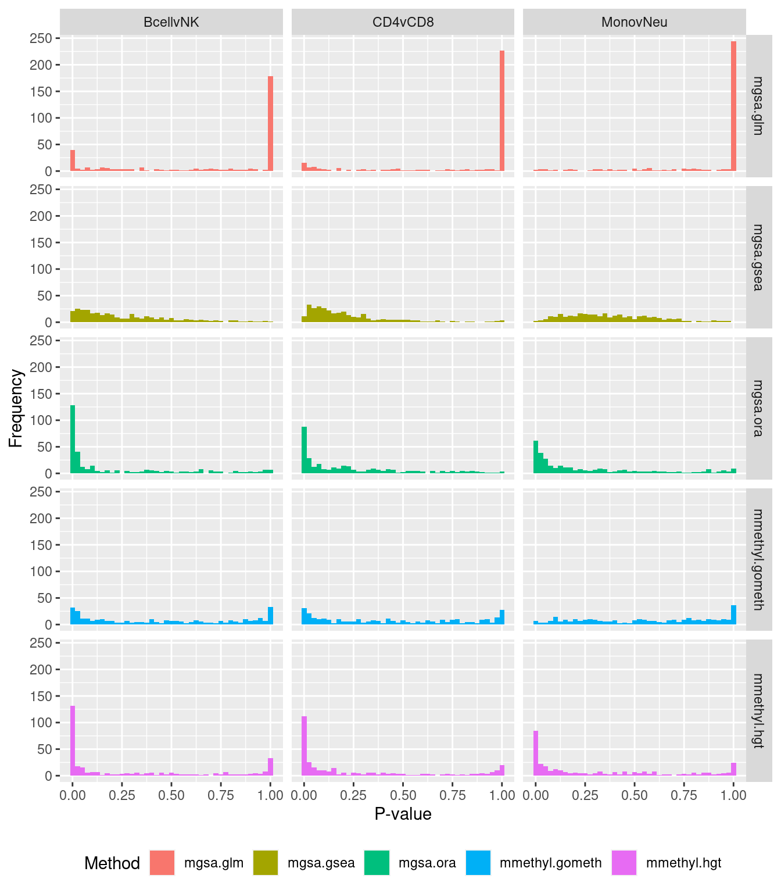
| Version | Author | Date |
|---|---|---|
| 976b2b5 | JovMaksimovic | 2020-07-17 |
| b8b0c0b | Jovana Maksimovic | 2020-06-23 |
| 22f00e9 | Jovana Maksimovic | 2020-05-19 |
| afc650b | JovMaksimovic | 2020-05-11 |
| da4f010 | JovMaksimovic | 2020-05-08 |
| 23cb749 | JovMaksimovic | 2020-04-28 |
| 06648a4 | JovMaksimovic | 2020-04-27 |
| 8dc1e0f | Jovana Maksimovic | 2020-04-24 |
| caa373d | Jovana Maksimovic | 2020-04-24 |
| 76dacfc | Jovana Maksimovic | 2020-03-31 |
As we are comparing immune cells, we expect GO categories related to the immune system and its processes to be highly ranked. To evalue this, we downloaded all of the child terms for the GO category "immune system process" (GO:002376) from AminGO 2; http://amigo.geneontology.org/amigo/term/GO:0002376. We also examine results when top ranked 100 GO terms from RNA-seq analysis of the same cell type comparisons is used as "truth".
immuneGO <- unique(read.csv(here("data/GO-immune-system-process.txt"),
stringsAsFactors = FALSE, header = FALSE,
col.names = "GOID"))
rnaseqGO <- readRDS(here("data/RNAseq-GO.rds"))
rnaseqGO %>% group_by(contrast) %>%
mutate(rank = 1:n()) %>%
filter(rank <= 100) -> topGOSets
p <- vector("list", length(unique(dat$contrast)))
for(i in 1:length(unique(dat$contrast))){
cont <- sort(unique(dat$contrast))[i]
dat %>% filter(set == "GO") %>%
filter(sub %in% c("n","c1")) %>%
filter(contrast == cont) %>%
mutate(method = unname(dict[method])) %>%
arrange(method, pvalue) %>%
group_by(method) %>%
mutate(rank = 1:n()) %>%
filter(rank <= 100) %>%
mutate(csum = cumsum(ID %in% immuneGO$GOID)) %>%
mutate(truth = "ISP Terms") -> immuneSum
dat %>% filter(set == "GO") %>%
filter(sub %in% c("n","c1")) %>%
filter(contrast == cont) %>%
mutate(method = unname(dict[method])) %>%
arrange(method, pvalue) %>%
group_by(method) %>%
mutate(rank = 1:n()) %>%
filter(rank <= 100) %>%
mutate(csum = cumsum(ID %in% topGOSets$ID[topGOSets$contrast %in%
contrast])) %>%
mutate(truth = "RNAseq Terms") -> rnaseqSum
truthSum <- bind_rows(immuneSum, rnaseqSum)
p[[i]] <- ggplot(truthSum, aes(x = rank, y = csum, colour = method)) +
geom_line() +
facet_wrap(vars(truth), ncol = 2) +
geom_vline(xintercept = 10, linetype = "dotted") +
labs(colour = "Method", x = "Rank",
y = "Cumulative no. sets in truth") +
theme(legend.position = "bottom") +
scale_color_manual(values = methodCols)
}
p[[1]] + ggtitle(sort(unique(dat$contrast))[1])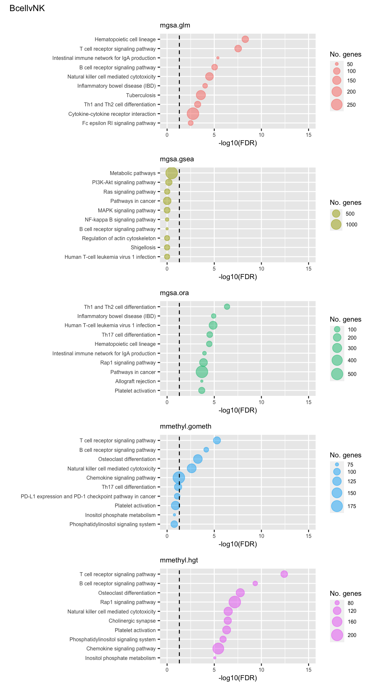
p[[2]] + ggtitle(sort(unique(dat$contrast))[2])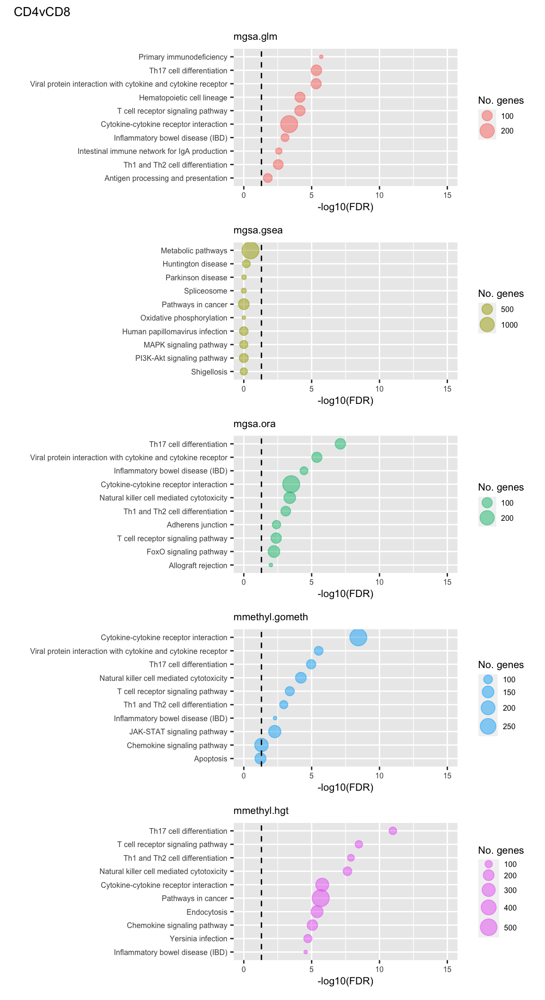
p[[3]] + ggtitle(sort(unique(dat$contrast))[3])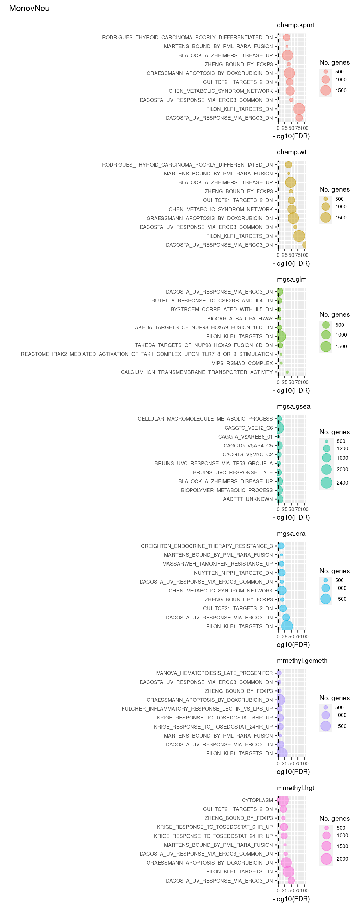
fig <- here("output/figures/Fig-4C.rds")
saveRDS(p[[1]], fig, compress = FALSE)
fig <- here("output/figures/SFig-5A.rds")
saveRDS(p[[2]], fig, compress = FALSE)
fig <- here("output/figures/SFig-6A.rds")
saveRDS(p[[3]], fig, compress = FALSE)Examine what the top 10 ranked gene sets are and how many genes they contain, for each method and comparison.
terms <- missMethyl:::.getGO()$idTable
nGenes <- rownames_to_column(data.frame(n = sapply(missMethyl:::.getGO()$idList,
length)),
var = "ID")
dat %>% filter(set == "GO") %>%
filter(sub %in% c("n","c1")) %>%
mutate(method = unname(dict[method])) %>%
arrange(contrast, method, pvalue) %>%
group_by(contrast, method) %>%
mutate(FDR = p.adjust(pvalue, method = "BH")) %>%
mutate(rank = 1:n()) %>%
filter(rank <= 10) %>%
inner_join(terms, by = c("ID" = "GOID")) %>%
inner_join(nGenes) -> subJoining, by = "ID"p <- vector("list", length(unique(sub$contrast)))
truthPal <- scales::hue_pal()(4)
names(truthPal) <- c("Both", "ISP", "Neither", "RNAseq")
for(i in 1:length(p)){
cont <- sort(unique(sub$contrast))[i]
sub %>% filter(contrast == cont) %>%
arrange(method, -rank) %>%
ungroup() %>%
mutate(idx = as.factor(1:n())) -> tmp
setLabs <- substr(tmp$TERM, 1, 40)
names(setLabs) <- tmp$idx
tmp %>% mutate(rna = ID %in% topGOSets$ID[topGOSets$contrast %in% cont],
isp = ID %in% immuneGO$GOID,
both = rna + isp,
col = ifelse(both == 2, "Both",
ifelse(both == 1 & rna == 1, "RNAseq",
ifelse(both == 1 & isp == 1,
"ISP", "Neither")))) %>%
mutate(col = factor(col,
levels = c("Both", "ISP", "RNAseq",
"Neither"))) -> tmp
p[[i]] <- ggplot(tmp, aes(x = -log10(FDR), y = idx, colour = col)) +
geom_point(aes(size = n), alpha = 0.7) +
scale_size(limits = c(min(sub$n), max(sub$n))) +
facet_wrap(vars(method), ncol = 2, scales = "free") +
scale_y_discrete(labels = setLabs) +
scale_colour_manual(values = truthPal) +
labs(y = "", size = "No. genes", colour = "In truth set") +
theme(axis.text.y = element_text(size = 6),
axis.text.x = element_text(size = 6),
legend.box = "horizontal",
legend.margin = margin(0, 0, 0, 0, unit = "lines"),
panel.spacing.x = unit(1, "lines")) +
coord_cartesian(xlim = c(-log10(0.99), -log10(10^-80))) +
geom_vline(xintercept = -log10(0.05), linetype = "dashed") +
ggtitle(cont)
}
shift_legend(p[[1]], plot = TRUE, pos = "left")
shift_legend(p[[2]], plot = TRUE, pos = "left")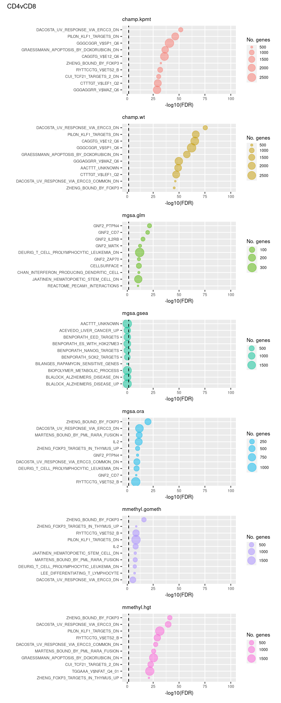
shift_legend(p[[3]], plot = TRUE, pos = "left")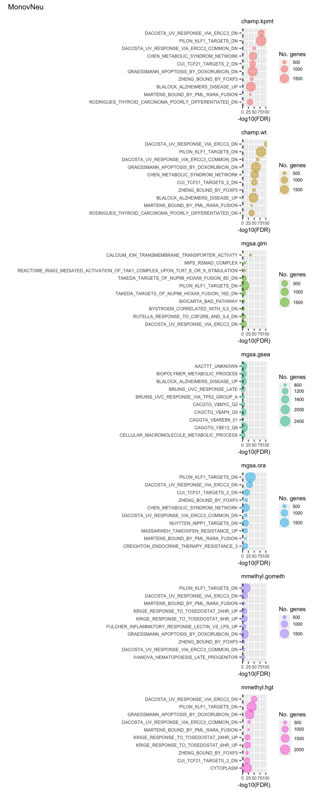
fig <- here("output/figures/Fig-4D.rds")
saveRDS(shift_legend(p[[1]] + theme(plot.title = element_blank()),
pos = "left"),
fig, compress = FALSE)
fig <- here("output/figures/SFig-5B.rds")
saveRDS(shift_legend(p[[2]] + theme(plot.title = element_blank()),
pos = "left"),
fig, compress = FALSE)
fig <- here("output/figures/SFig-6B.rds")
saveRDS(shift_legend(p[[3]] + theme(plot.title = element_blank()),
pos = "left"),
fig, compress = FALSE)P-value histograms for the different methods for all contrasts on GO categories.
dat %>% filter(set == "GO") %>%
filter(sub %in% c("n","c1")) %>%
mutate(method = unname(dict[method])) -> subDat
ggplot(subDat, aes(pvalue, fill = method)) +
geom_histogram(binwidth = 0.025) +
facet_grid(cols = vars(contrast), rows = vars(method)) +
theme(legend.position = "bottom") +
labs(x = "P-value", y = "Frequency", fill = "Method") +
scale_fill_manual(values = methodCols)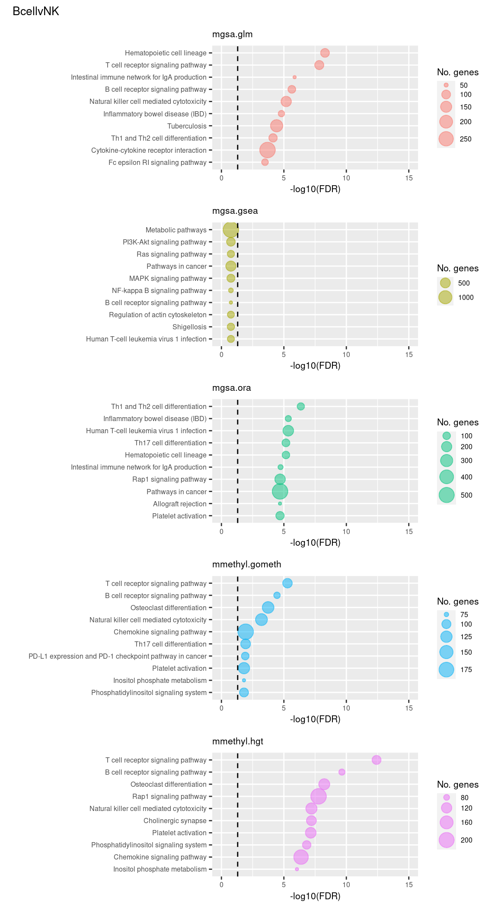
Compare gometh results using different DM CpG significance cutoffs
dat %>% filter(set == "GO") %>%
filter(grepl("mmethyl", method)) %>%
mutate(method = unname(dict[method])) %>%
arrange(contrast, method, pvalue) %>%
group_by(contrast, method, sub) %>%
mutate(csum = cumsum(ID %in% immuneGO$GOID)) %>%
mutate(rank = 1:n()) %>%
mutate(cut = ifelse(sub == "c1", "Top 5000",
ifelse(sub == "c2", "Top 10000",
ifelse(sub == "p1", "FDR < 0.01", "FDR < 0.05")))) %>%
filter(rank <= 100) -> sub
p <- ggplot(sub, aes(x = rank, y = csum, colour = cut)) +
geom_line() +
facet_wrap(vars(contrast, method), ncol=2, nrow = 3, scales = "free") +
geom_vline(xintercept = 10, linetype = "dotted") +
labs(colour = "Sig. select", x = "Rank", y = "Cumulative no. immune sets") +
theme(legend.position = "bottom")
p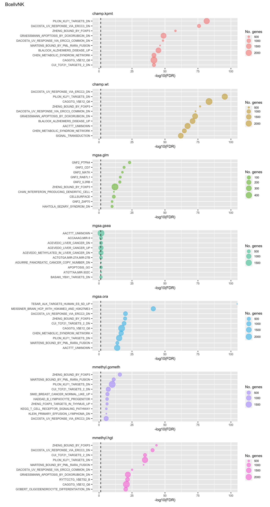
dat %>% filter(set == "GO") %>%
filter(grepl("mmethyl", method)) %>%
mutate(method = unname(dict[method])) %>%
arrange(contrast, method, pvalue) %>%
group_by(contrast, method, sub) %>%
mutate(csum = cumsum(ID %in% topGOSets$ID[topGOSets$contrast %in%
contrast])) %>%
mutate(rank = 1:n()) %>%
mutate(cut = ifelse(sub == "c1", "Top 5000",
ifelse(sub == "c2", "Top 10000",
ifelse(sub == "p1", "FDR < 0.01", "FDR < 0.05")))) %>%
filter(rank <= 100) -> sub
p <- ggplot(sub, aes(x = rank, y = csum, colour = cut)) +
geom_line() +
facet_wrap(vars(contrast, method), ncol=2, nrow = 3, scales = "free") +
geom_vline(xintercept = 10, linetype = "dotted") +
labs(colour = "Sig. select", x = "Rank",
y = glue("Cumulative no. RNAseq sets")) +
theme(legend.position = "bottom")
p
Test KEGG pathways
Now test KEGG pathways with at least 5 genes and 5000 at most.
Again, as we are comparing immune cells we expecte pathways from the following categories to be highly ranked: Immune system, Immune disease, Signal transduction, Signaling molecules and interaction; https://www.genome.jp/kegg/pathway.html.
Examine results when top ranked 100 KEGG pathways from RNA-seq analysis of the same cell type comparisons is used as "truth".
immuneKEGG <- read.csv(here("data/kegg-immune-related-pathways.csv"),
stringsAsFactors = FALSE, header = FALSE,
col.names = c("ID","pathway"))
immuneKEGG$PID <- paste0("path:hsa0",immuneKEGG$ID)
dat %>% filter(set == "KEGG") %>%
filter(sub %in% c("n","c1")) %>%
mutate(method = unname(dict[method])) %>%
arrange(contrast, method, pvalue) %>%
group_by(contrast, method) %>%
mutate(csum = cumsum(ID %in% immuneKEGG$PID)) %>%
mutate(rank = 1:n()) %>%
filter(rank <= 100) -> sub
p1 <- ggplot(sub, aes(x = rank, y = csum, colour = method)) +
geom_line() +
facet_wrap(vars(contrast), ncol=3) +
geom_vline(xintercept = 10, linetype = "dotted") +
labs(colour = "Method", x = "Rank", y = "Cumulative no. immune sets") +
theme(legend.position = "bottom") +
scale_color_manual(values = methodCols)rnaseqKEGG <- readRDS(here("data/RNAseq-KEGG.rds"))
rnaseqKEGG %>% group_by(contrast) %>%
mutate(rank = 1:n()) %>%
filter(rank <= 100) -> topKEGG
dat %>% filter(set == "KEGG") %>%
filter(sub %in% c("n","c1")) %>%
mutate(method = unname(dict[method])) %>%
arrange(contrast, method, pvalue) %>%
group_by(contrast, method) %>%
mutate(csum = cumsum(ID %in% topKEGG$PID[topKEGG$contrast %in% contrast])) %>%
mutate(rank = 1:n()) %>%
filter(rank <= 100) -> sub
p2 <- ggplot(sub, aes(x = rank, y = csum, colour = method)) +
geom_line() +
facet_wrap(vars(contrast), ncol=3, scales = "free_y") +
geom_vline(xintercept = 10, linetype = "dotted") +
labs(colour = "Method", x = "Rank", y = "Cumulative no. RNAseq sets") +
theme(legend.position = "bottom") +
scale_color_manual(values = methodCols)
p3 <- p1 / p2 +
plot_layout(guides = "collect") &
theme(legend.position = "bottom")
p3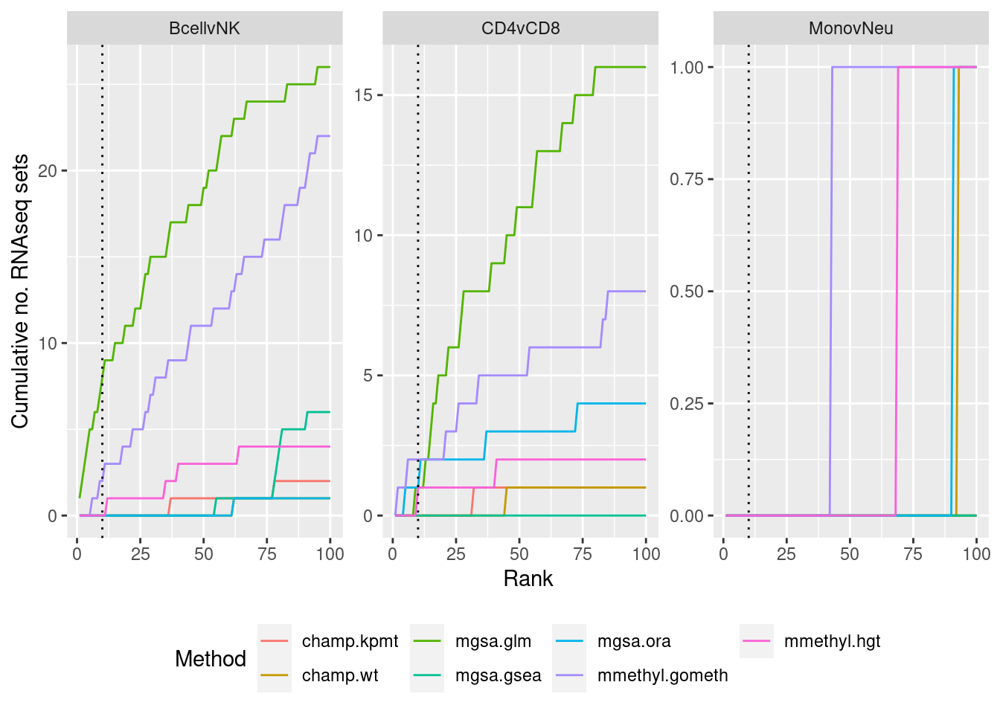
fig <- here("output/figures/SFig-7A.rds")
saveRDS(p1, fig, compress = FALSE)
fig <- here("output/figures/SFig-7B.rds")
saveRDS(p2, fig, compress = FALSE)Examine what the top 10 ranked gene sets are and how many genes they contain, for each method and comparison.
terms <- missMethyl:::.getKEGG()$idTable
nGenes <- rownames_to_column(data.frame(n = sapply(missMethyl:::.getKEGG()$idList,
length)),
var = "ID")
dat %>% filter(set == "KEGG") %>%
filter(sub %in% c("n","c1")) %>%
mutate(method = unname(dict[method])) %>%
arrange(contrast, method, pvalue) %>%
group_by(contrast, method) %>%
mutate(FDR = p.adjust(pvalue, method = "BH")) %>%
mutate(rank = 1:n()) %>%
filter(rank <= 10) %>%
inner_join(terms, by = c("ID" = "PathwayID")) %>%
inner_join(nGenes) -> subJoining, by = "ID"p <- vector("list", length(unique(sub$contrast)))
for(i in 1:length(p)){
cont <- sort(unique(sub$contrast))[i]
sub %>% filter(contrast == cont) %>%
arrange(method, -rank) %>%
ungroup() %>%
mutate(idx = as.factor(1:n())) -> tmp
setLabs <- substr(tmp$Description, 1, 40)
names(setLabs) <- tmp$idx
tmp %>% mutate(rna = ID %in% topKEGG$PID[topKEGG$contrast %in% cont],
isp = ID %in% immuneKEGG$PID,
both = rna + isp,
col = ifelse(both == 2, "Both",
ifelse(both == 1 & rna == 1, "RNAseq",
ifelse(both == 1 & isp == 1,
"ISP", "Neither")))) %>%
mutate(col = factor(col,
levels = c("Both", "ISP", "RNAseq",
"Neither"))) -> tmp
p[[i]] <- ggplot(tmp, aes(x = -log10(FDR), y = idx, colour = col)) +
geom_point(aes(size = n), alpha = 0.7) +
scale_size(limits = c(min(sub$n), max(sub$n))) +
facet_wrap(vars(method), ncol = 2, scales = "free") +
scale_y_discrete(labels = setLabs) +
scale_colour_manual(values = truthPal) +
labs(y = "", size = "No. genes", colour = "In truth set") +
theme(axis.text.y = element_text(size = 6),
axis.text.x = element_text(size = 6),
legend.box = "horizontal",
legend.margin = margin(0, 0, 0, 0, unit = "lines"),
panel.spacing.x = unit(1, "lines")) +
coord_cartesian(xlim = c(-log10(0.99), -log10(10^-80))) +
geom_vline(xintercept = -log10(0.05), linetype = "dashed") +
ggtitle(cont)
}
shift_legend(p[[1]], plot = TRUE, pos = "left")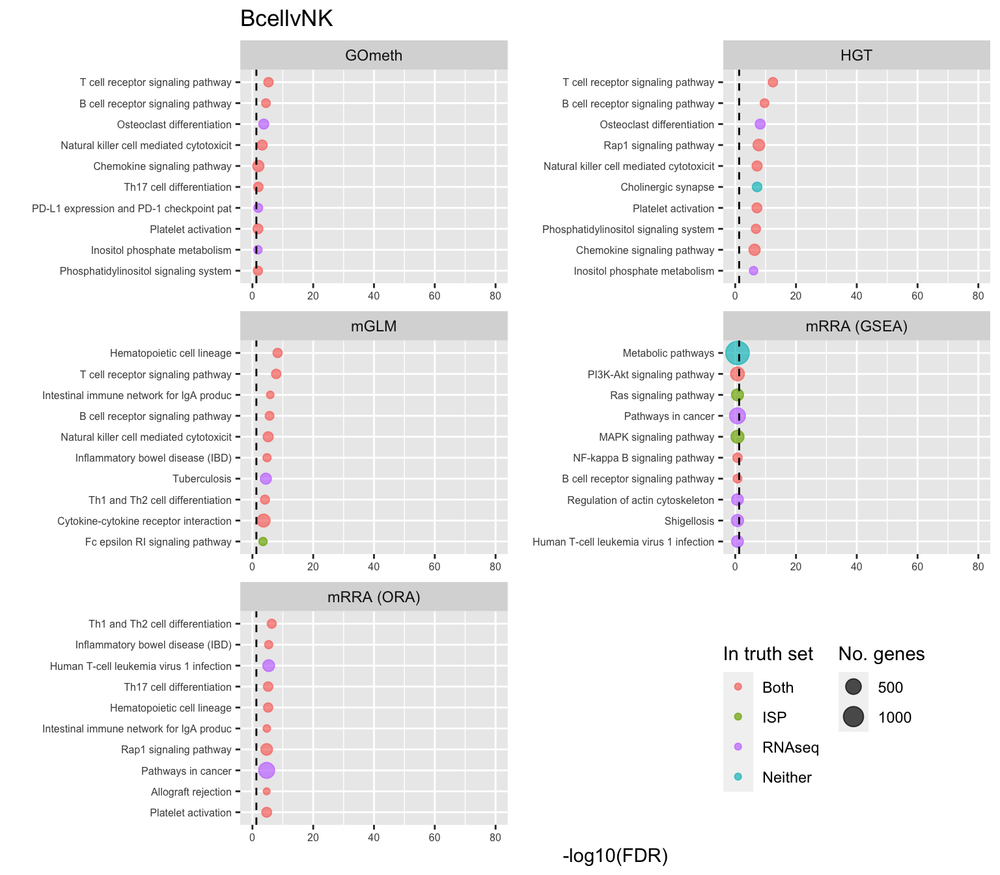
shift_legend(p[[2]], plot = TRUE, pos = "left")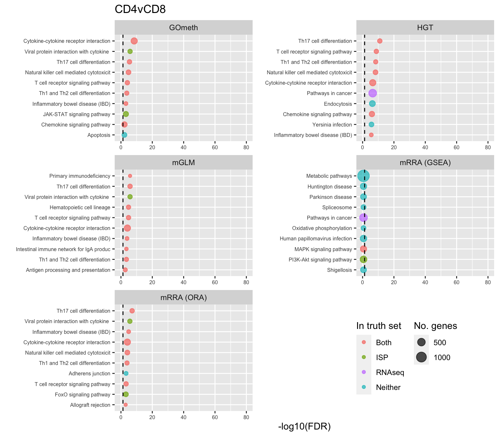
| Version | Author | Date |
|---|---|---|
| 976b2b5 | JovMaksimovic | 2020-07-17 |
shift_legend(p[[3]], plot = TRUE, pos = "left")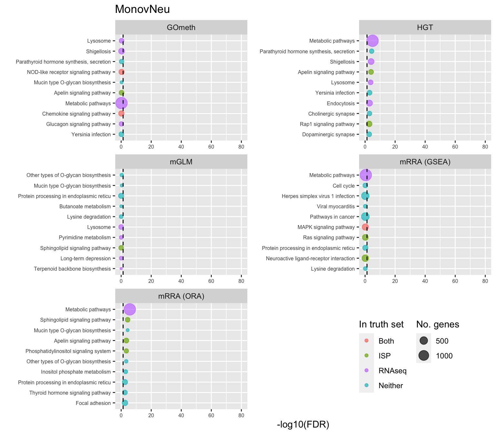
| Version | Author | Date |
|---|---|---|
| 976b2b5 | JovMaksimovic | 2020-07-17 |
fig <- here("output/figures/SFig-7C.rds")
saveRDS(shift_legend(p[[1]] + theme(plot.title = element_blank()),
pos = "left"),
fig, compress = FALSE)
fig <- here("output/figures/SFig-7D.rds")
saveRDS(shift_legend(p[[2]] + theme(plot.title = element_blank()),
pos = "left"),
fig, compress = FALSE)
fig <- here("output/figures/SFig-7E.rds")
saveRDS(shift_legend(p[[3]] + theme(plot.title = element_blank()),
pos = "left"),
fig, compress = FALSE)P-value histograms for the different methods for all contrasts on KEGG pathways.
dat %>% filter(set == "KEGG") %>%
filter(sub %in% c("n","c1")) %>%
mutate(method = unname(dict[method])) -> subDat
ggplot(subDat, aes(pvalue, fill = method)) +
geom_histogram(binwidth = 0.025) +
facet_grid(cols = vars(contrast), rows = vars(method)) +
theme(legend.position = "bottom") +
labs(x = "P-value", y = "Frequency", fill = "Method") +
scale_fill_manual(values = methodCols)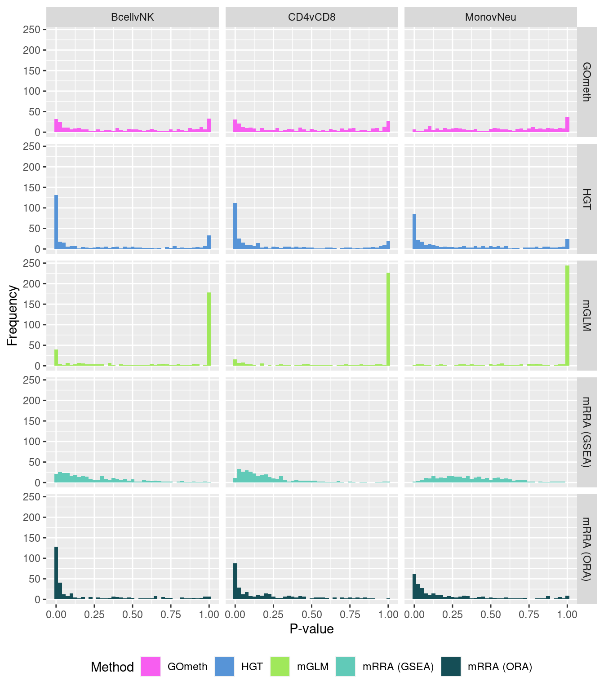
Compare gometh results using different DM CpG significance cutoffs
dat %>% filter(set == "KEGG") %>%
filter(grepl("mmethyl", method)) %>%
mutate(method = unname(dict[method])) %>%
arrange(contrast, method, pvalue) %>%
group_by(contrast, method, sub) %>%
mutate(csum = cumsum(ID %in% immuneKEGG$PID)) %>%
mutate(rank = 1:n()) %>%
mutate(cut = ifelse(sub == "c1", "Top 5000",
ifelse(sub == "c2", "Top 10000",
ifelse(sub == "p1", "FDR < 0.01", "FDR < 0.05")))) %>%
filter(rank <= 100) -> sub
p <- ggplot(sub, aes(x = rank, y = csum, colour = cut)) +
geom_line() +
facet_wrap(vars(contrast, method), ncol=2, nrow = 3, scales = "free") +
geom_vline(xintercept = 10, linetype = "dotted") +
labs(colour = "Sig. select", x = "Rank", y = "Cumulative no. immune sets") +
theme(legend.position = "bottom")
p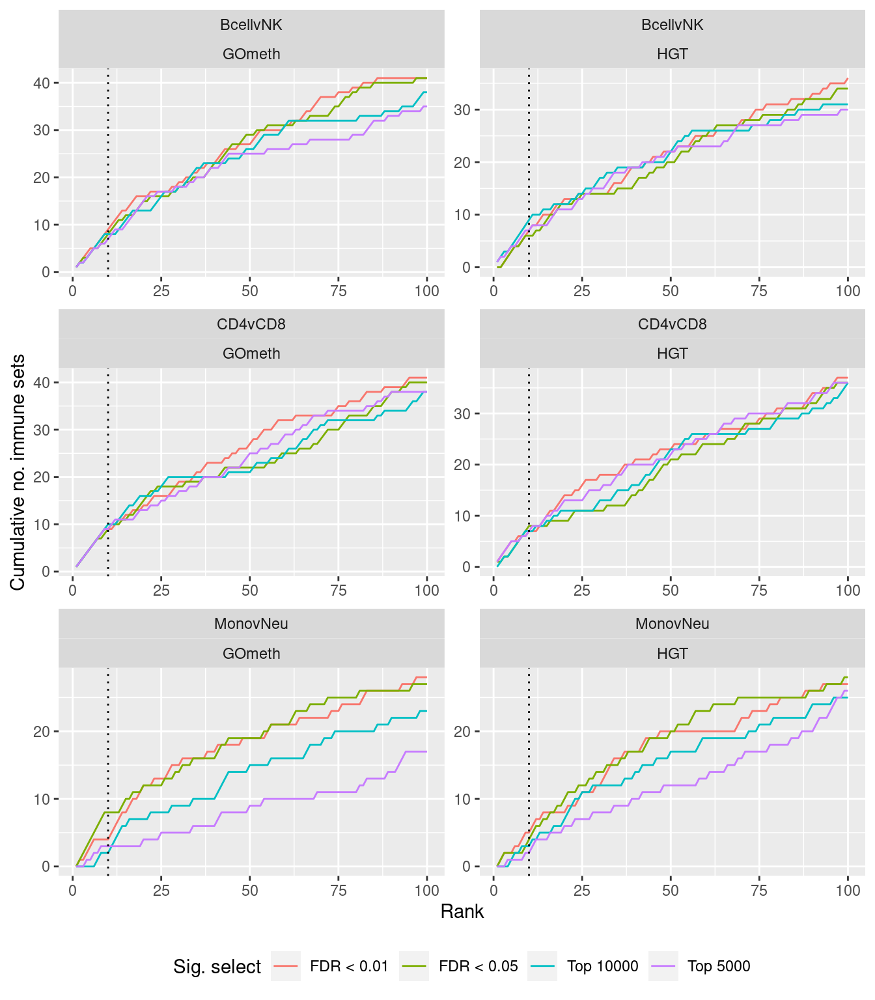
dat %>% filter(set == "KEGG") %>%
filter(grepl("mmethyl", method)) %>%
mutate(method = unname(dict[method])) %>%
arrange(contrast, method, pvalue) %>%
group_by(contrast, method, sub) %>%
mutate(csum = cumsum(ID %in% topKEGG$PID[topKEGG$contrast %in% contrast])) %>%
mutate(rank = 1:n()) %>%
mutate(cut = ifelse(sub == "c1", "Top 5000",
ifelse(sub == "c2", "Top 10000",
ifelse(sub == "p1", "FDR < 0.01", "FDR < 0.05")))) %>%
filter(rank <= 100) -> sub
p <- ggplot(sub, aes(x = rank, y = csum, colour = cut)) +
geom_line() +
facet_wrap(vars(contrast, method), ncol=2, nrow = 3, scales = "free") +
geom_vline(xintercept = 10, linetype = "dotted") +
labs(colour = "Sig. select", x = "Rank",
y = glue("Cumulative no. RNAseq sets")) +
theme(legend.position = "bottom")
p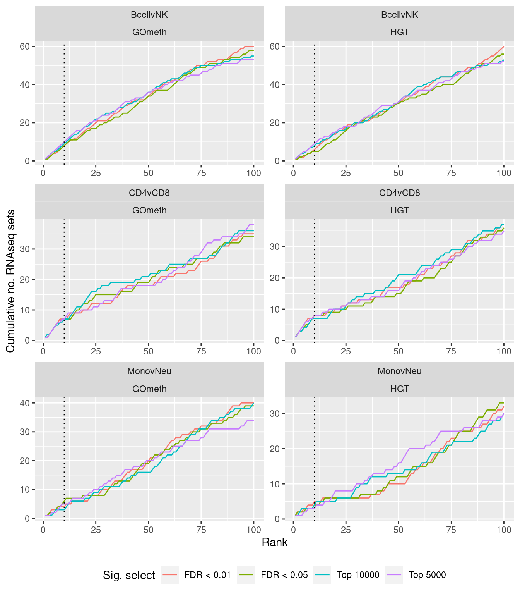
Test BROAD gene sets
As the ebGSEA method from the ChAMP package only allows testing of their in-built database of Broad Institute gene sets, we will compare to other methods by testing these same gene sets. Using the top 100 ranked gene sets as identified by Belinda's gsaseq analysis of the corresponding RNAseq data as "truth".
rnaseqBROAD <- readRDS(here("data/RNAseq-BROAD-GSA.rds"))
rnaseqBROAD %>% group_by(contrast) %>%
mutate(rank = 1:n()) %>%
filter(rank <= 100) -> topBROAD
p <- vector("list", length(unique(dat$contrast)))
for(i in 1:length(unique(dat$contrast))){
cont <- sort(unique(dat$contrast))[i]
dat %>% filter(set == "BROAD") %>%
filter(sub %in% c("n","c1")) %>%
filter(contrast == cont) %>%
mutate(method = unname(dict[method])) %>%
arrange(contrast, method, pvalue) %>%
group_by(contrast, method) %>%
mutate(csum = cumsum(ID %in% topBROAD$ID[topBROAD$contrast %in% contrast])) %>%
mutate(rank = 1:n()) %>%
filter(rank <= 100) -> sub
p[[i]] <- ggplot(sub, aes(x = rank, y = csum, colour = method)) +
geom_line() +
geom_vline(xintercept = 10, linetype = "dotted") +
labs(colour = "Method", x = "Rank", y = "Cumulative no. RNAseq sets") +
theme(legend.position = "bottom") +
scale_color_manual(values = methodCols) +
ggtitle(cont)
}
p[[1]]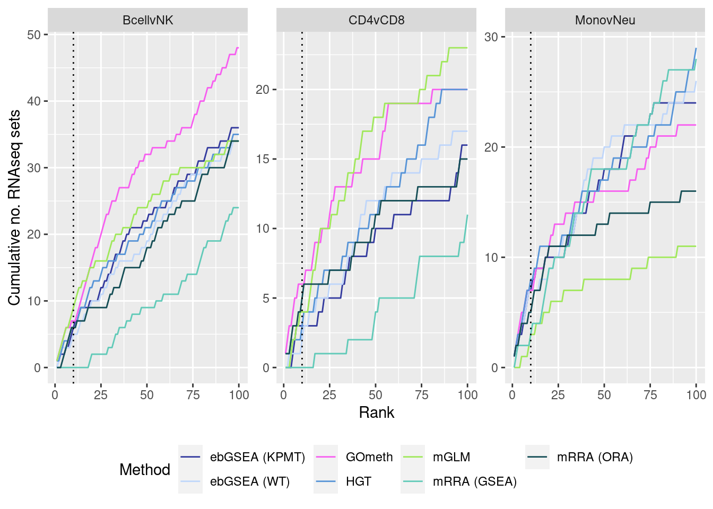
p[[2]]
| Version | Author | Date |
|---|---|---|
| 976b2b5 | JovMaksimovic | 2020-07-17 |
p[[3]]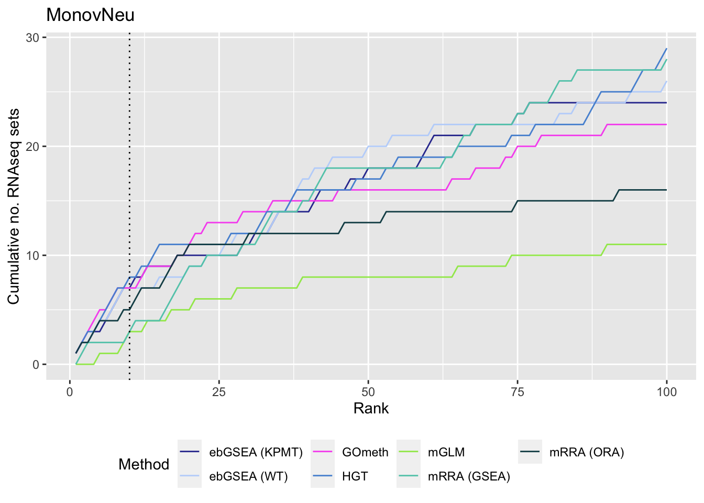
| Version | Author | Date |
|---|---|---|
| 976b2b5 | JovMaksimovic | 2020-07-17 |
fig <- here("output/figures/SFig-8A.rds")
saveRDS(p[[1]], fig, compress = FALSE)
fig <- here("output/figures/SFig-9A.rds")
saveRDS(p[[2]], fig, compress = FALSE)
fig <- here("output/figures/SFig-10A.rds")
saveRDS(p[[3]], fig, compress = FALSE)data(PathwayList)
nGenes <- rownames_to_column(data.frame(n = sapply(PathwayList,
length)),
var = "ID")
dat %>% filter(set == "BROAD") %>%
filter(sub %in% c("n","c1")) %>%
mutate(method = unname(dict[method])) %>%
arrange(contrast, method, pvalue) %>%
group_by(contrast, method) %>%
mutate(FDR = p.adjust(pvalue, method = "BH")) %>%
mutate(rank = 1:n()) %>%
filter(rank <= 10) %>%
inner_join(nGenes) -> subJoining, by = "ID"p <- vector("list", length(unique(sub$contrast)))
for(i in 1:length(p)){
cont <- sort(unique(sub$contrast))[i]
sub %>% filter(contrast == cont) %>%
arrange(method, -rank) %>%
ungroup() %>%
mutate(idx = as.factor(1:n())) -> tmp
setLabs <- substr(tmp$ID, 1, 30)
names(setLabs) <- tmp$idx
tmp %>% mutate(rna = ID %in% topBROAD$ID[topGOSets$contrast %in% cont],
col = ifelse(rna == 1, "RNAseq", "None")) %>%
mutate(col = factor(col, levels = c("RNAseq", "None"))) -> tmp
p[[i]] <- ggplot(tmp, aes(x = -log10(FDR), y = idx, colour = col)) +
geom_point(aes(size = n), alpha = 0.7) +
scale_size(limits = c(min(sub$n), max(sub$n))) +
facet_wrap(vars(method), ncol = 2, scales = "free") +
scale_y_discrete(labels = setLabs) +
scale_color_manual(values = scales::hue_pal()(4)[3:4]) +
labs(y = "", size = "No. genes", colour = "In truth set") +
theme(axis.text.y = element_text(size = 6),
axis.text.x = element_text(size = 6),
legend.box = "horizontal",
legend.margin = margin(0, 0, 0, 0, unit = "lines"),
panel.spacing.x = unit(1, "lines")) +
coord_cartesian(xlim = c(-log10(0.99), -log10(10^-100))) +
geom_vline(xintercept = -log10(0.05), linetype = "dashed") +
ggtitle(cont)
}
shift_legend(p[[1]], plot = TRUE, pos = "left")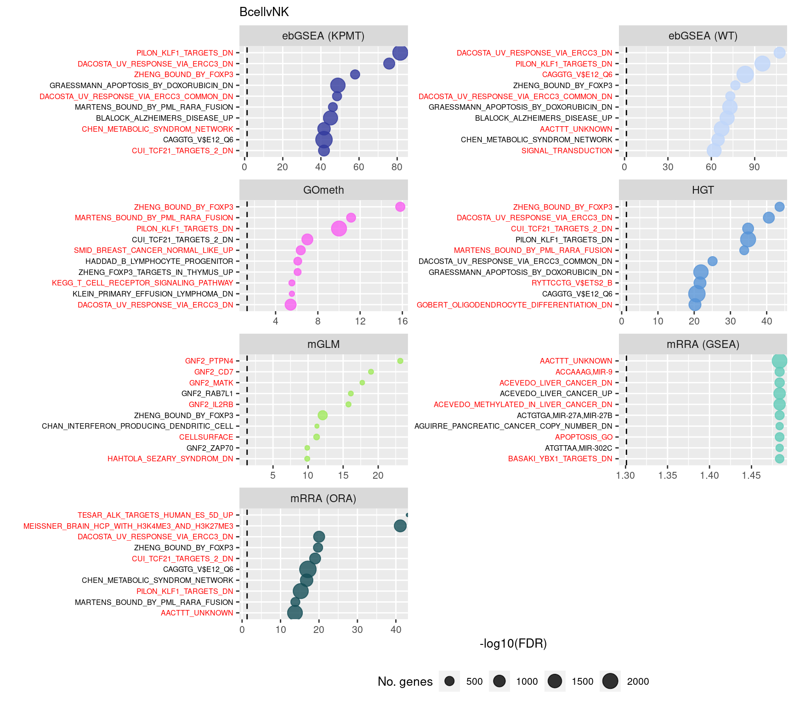
shift_legend(p[[2]], plot = TRUE, pos = "left")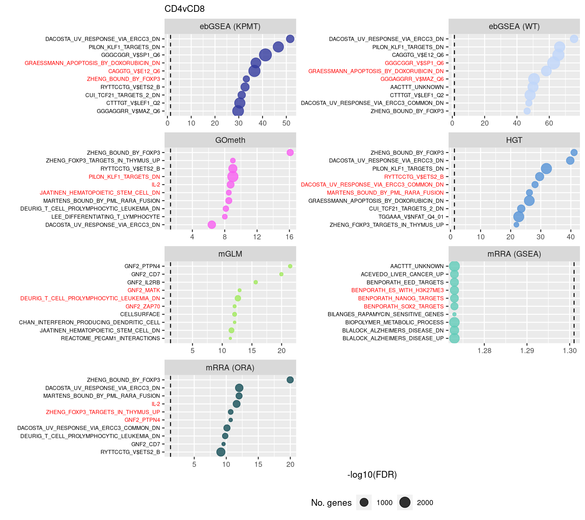
shift_legend(p[[3]], plot = TRUE, pos = "left")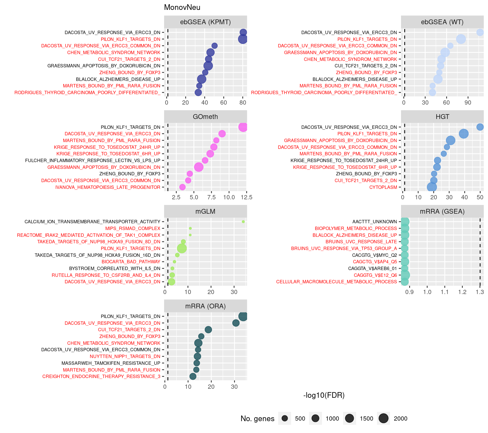
fig <- here("output/figures/SFig-8B.rds")
saveRDS(shift_legend(p[[1]] + theme(plot.title = element_blank()),
pos = "left"),
fig, compress = FALSE)
fig <- here("output/figures/SFig-9B.rds")
saveRDS(shift_legend(p[[2]] + theme(plot.title = element_blank()),
pos = "left"),
fig, compress = FALSE)
fig <- here("output/figures/SFig-10B.rds")
saveRDS(shift_legend(p[[3]] + theme(plot.title = element_blank()),
pos = "left"),
fig, compress = FALSE)P-value histograms for the different methods for all contrasts on BROAD gene sets.
dat %>% filter(set == "BROAD") %>%
filter(sub %in% c("n","c1")) %>%
mutate(method = unname(dict[method])) -> subDat
ggplot(subDat, aes(pvalue, fill = method)) +
geom_histogram(binwidth = 0.025) +
facet_grid(cols = vars(contrast), rows = vars(method)) +
theme(legend.position = "bottom") +
labs(x = "P-value", y = "Frequency", fill = "Method") +
scale_fill_manual(values = methodCols)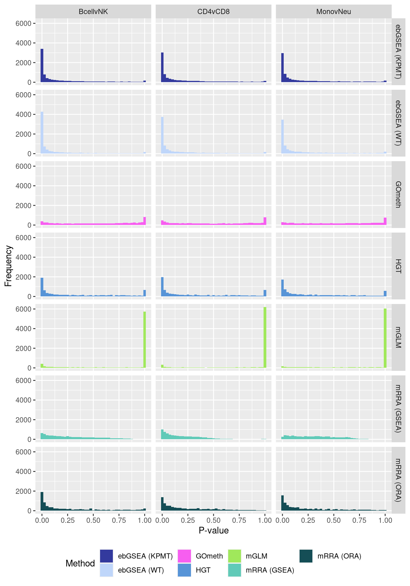
Compare gometh results using different DM CpG significance cutoffs
dat %>% filter(set == "BROAD") %>%
filter(grepl("mmethyl", method)) %>%
mutate(method = unname(dict[method])) %>%
arrange(contrast, method, pvalue) %>%
group_by(contrast, method, sub) %>%
mutate(csum = cumsum(ID %in% topBROAD$ID)) %>%
mutate(rank = 1:n()) %>%
mutate(cut = ifelse(sub == "c1", "Top 5000",
ifelse(sub == "c2", "Top 10000",
ifelse(sub == "p1", "FDR < 0.01", "FDR < 0.05")))) %>%
filter(rank <= 100) -> sub
p <- ggplot(sub, aes(x = rank, y = csum, colour = cut)) +
geom_line() +
facet_wrap(vars(contrast, method), ncol=2, nrow = 3, scales = "free") +
geom_vline(xintercept = 10, linetype = "dotted") +
labs(colour = "Sig. select", x = "Rank", y = "Cumulative no. immune sets") +
theme(legend.position = "bottom")
p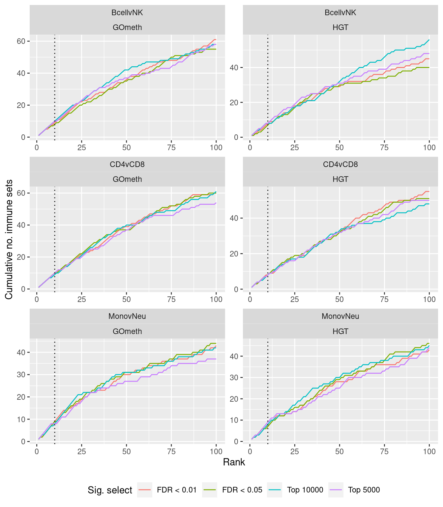
dat %>% filter(set == "BROAD") %>%
filter(grepl("mmethyl", method)) %>%
mutate(method = unname(dict[method])) %>%
arrange(contrast, method, pvalue) %>%
group_by(contrast, method, sub) %>%
mutate(csum = cumsum(ID %in% topBROAD$ID)) %>%
mutate(rank = 1:n()) %>%
mutate(cut = ifelse(sub == "c1", "Top 5000",
ifelse(sub == "c2", "Top 10000",
ifelse(sub == "p1", "FDR < 0.01", "FDR < 0.05")))) %>%
filter(rank <= 100) -> sub
p <- ggplot(sub, aes(x = rank, y = csum, colour = cut)) +
geom_line() +
facet_wrap(vars(contrast, method), ncol=2, nrow = 3, scales = "free") +
geom_vline(xintercept = 10, linetype = "dotted") +
labs(colour = "Sig. select", x = "Rank", y = "Cumulative no. immune sets") +
theme(legend.position = "bottom")
p
sessionInfo()R version 3.6.3 (2020-02-29)
Platform: x86_64-apple-darwin15.6.0 (64-bit)
Running under: macOS Mojave 10.14.6
Matrix products: default
BLAS: /Library/Frameworks/R.framework/Versions/3.6/Resources/lib/libRblas.0.dylib
LAPACK: /Library/Frameworks/R.framework/Versions/3.6/Resources/lib/libRlapack.dylib
locale:
[1] en_AU.UTF-8/en_AU.UTF-8/en_AU.UTF-8/C/en_AU.UTF-8/en_AU.UTF-8
attached base packages:
[1] grid stats4 parallel stats graphics grDevices utils
[8] datasets methods base
other attached packages:
[1] IlluminaHumanMethylationEPICanno.ilm10b4.hg19_0.6.0
[2] lemon_0.4.5
[3] ChAMPdata_2.18.0
[4] patchwork_1.0.1
[5] rbin_0.2.0
[6] forcats_0.5.0
[7] stringr_1.4.0
[8] dplyr_1.0.0
[9] purrr_0.3.4
[10] readr_1.3.1
[11] tidyr_1.1.0
[12] tibble_3.0.3
[13] tidyverse_1.3.0
[14] glue_1.4.1
[15] ggplot2_3.3.2
[16] missMethyl_1.20.4
[17] gridExtra_2.3
[18] reshape2_1.4.4
[19] limma_3.42.2
[20] paletteer_1.2.0
[21] minfi_1.32.0
[22] bumphunter_1.28.0
[23] locfit_1.5-9.4
[24] iterators_1.0.12
[25] foreach_1.5.0
[26] Biostrings_2.54.0
[27] XVector_0.26.0
[28] SummarizedExperiment_1.16.1
[29] DelayedArray_0.12.3
[30] BiocParallel_1.20.1
[31] matrixStats_0.56.0
[32] Biobase_2.46.0
[33] GenomicRanges_1.38.0
[34] GenomeInfoDb_1.22.1
[35] IRanges_2.20.2
[36] S4Vectors_0.24.4
[37] BiocGenerics_0.32.0
[38] here_0.1
[39] workflowr_1.6.2
loaded via a namespace (and not attached):
[1] readxl_1.3.1
[2] backports_1.1.8
[3] BiocFileCache_1.10.2
[4] plyr_1.8.6
[5] splines_3.6.3
[6] digest_0.6.25
[7] htmltools_0.5.0
[8] GO.db_3.10.0
[9] fansi_0.4.1
[10] magrittr_1.5
[11] memoise_1.1.0
[12] annotate_1.64.0
[13] modelr_0.1.8
[14] askpass_1.1
[15] siggenes_1.60.0
[16] prettyunits_1.1.1
[17] colorspace_1.4-1
[18] rvest_0.3.5
[19] blob_1.2.1
[20] rappdirs_0.3.1
[21] haven_2.3.1
[22] BiasedUrn_1.07
[23] xfun_0.15
[24] jsonlite_1.7.0
[25] crayon_1.3.4
[26] RCurl_1.98-1.2
[27] genefilter_1.68.0
[28] GEOquery_2.54.1
[29] IlluminaHumanMethylationEPICmanifest_0.3.0
[30] survival_3.2-3
[31] ruv_0.9.7.1
[32] gtable_0.3.0
[33] zlibbioc_1.32.0
[34] Rhdf5lib_1.8.0
[35] HDF5Array_1.14.4
[36] scales_1.1.1
[37] DBI_1.1.0
[38] rngtools_1.5
[39] Rcpp_1.0.5
[40] xtable_1.8-4
[41] progress_1.2.2
[42] bit_1.1-15.2
[43] mclust_5.4.6
[44] preprocessCore_1.48.0
[45] httr_1.4.2
[46] RColorBrewer_1.1-2
[47] ellipsis_0.3.1
[48] farver_2.0.3
[49] pkgconfig_2.0.3
[50] reshape_0.8.8
[51] XML_3.99-0.3
[52] dbplyr_1.4.4
[53] labeling_0.3
[54] tidyselect_1.1.0
[55] rlang_0.4.7
[56] later_1.1.0.1
[57] AnnotationDbi_1.48.0
[58] cellranger_1.1.0
[59] munsell_0.5.0
[60] tools_3.6.3
[61] cli_2.0.2
[62] generics_0.0.2
[63] RSQLite_2.2.0
[64] broom_0.7.0
[65] evaluate_0.14
[66] yaml_2.2.1
[67] rematch2_2.1.2
[68] org.Hs.eg.db_3.10.0
[69] knitr_1.29
[70] bit64_0.9-7.1
[71] fs_1.4.2
[72] beanplot_1.2
[73] scrime_1.3.5
[74] methylumi_2.32.0
[75] nlme_3.1-148
[76] doRNG_1.8.2
[77] whisker_0.4
[78] nor1mix_1.3-0
[79] xml2_1.3.2
[80] biomaRt_2.42.1
[81] compiler_3.6.3
[82] rstudioapi_0.11
[83] curl_4.3
[84] reprex_0.3.0
[85] statmod_1.4.34
[86] stringi_1.4.6
[87] IlluminaHumanMethylation450kanno.ilmn12.hg19_0.6.0
[88] GenomicFeatures_1.38.2
[89] lattice_0.20-41
[90] Matrix_1.2-18
[91] IlluminaHumanMethylation450kmanifest_0.4.0
[92] multtest_2.42.0
[93] vctrs_0.3.2
[94] pillar_1.4.6
[95] lifecycle_0.2.0
[96] cowplot_1.0.0
[97] data.table_1.12.8
[98] bitops_1.0-6
[99] httpuv_1.5.4
[100] rtracklayer_1.46.0
[101] R6_2.4.1
[102] promises_1.1.1
[103] codetools_0.2-16
[104] MASS_7.3-51.6
[105] assertthat_0.2.1
[106] rhdf5_2.30.1
[107] openssl_1.4.2
[108] rprojroot_1.3-2
[109] withr_2.2.0
[110] GenomicAlignments_1.22.1
[111] Rsamtools_2.2.3
[112] GenomeInfoDbData_1.2.2
[113] mgcv_1.8-31
[114] hms_0.5.3
[115] quadprog_1.5-8
[116] base64_2.0
[117] rmarkdown_2.3
[118] DelayedMatrixStats_1.8.0
[119] illuminaio_0.28.0
[120] git2r_0.27.1
[121] lubridate_1.7.9